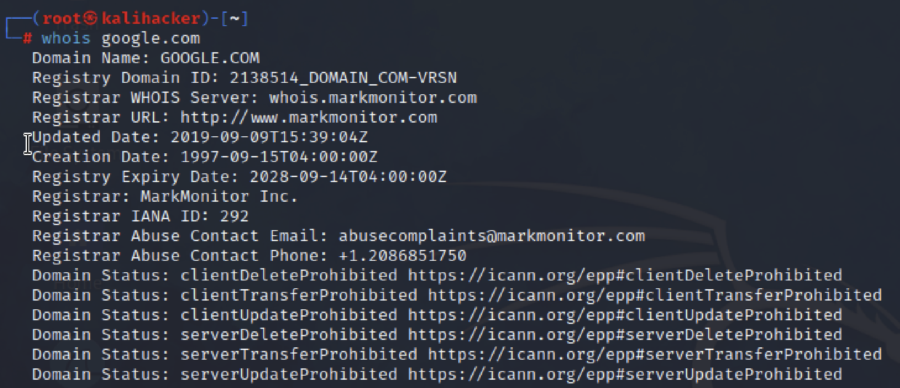
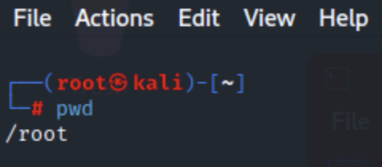
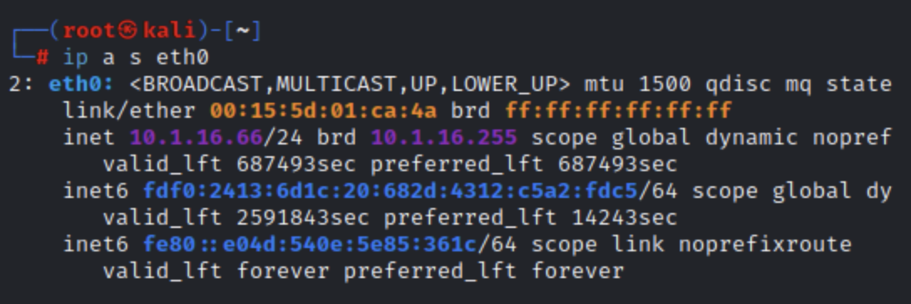
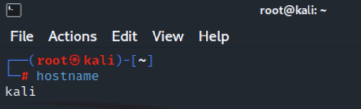

whois => can be used to lookup domain registration information to try to detect misuse in other cases.
Example: "whois google.com"

pwd => Report the full path to the current directory

ip a s etch0 => shows the network adapter configuration

hostname=> dysplay the system's name.

SSH commands are used to connect to hosts and set up authentication methods.
To connect to an SSH server at 10.1.0.10 using an account named "bobby" and password authentication, run:
ssh booby@10.1.0.10
The following commands create a new key pair and copy it to an account on the remote server
ssh-keygen -t rsa
ssh-copy-id boby@10.1.0.10
In an SSH prompt use the standart Linux shell commands.
exit
You can also use the scp commando to copy a file from the remote server to the local host:
scp booby@10.1.0.10:/logs/audit.log audit.log
Reverse the argumens to copy a file from the local host to the remote server. To copy contents
of a directory and any subdirectories (recursively), use the -r option.
How to manage access controls on a Linux server.